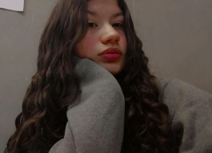
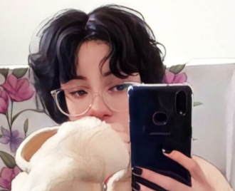
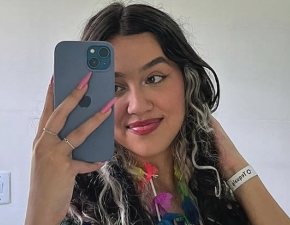

Quem Somos?
Bem vindos a Blue Tech!
somos uma empresa especializada em desenvolvimentos de Web Softwares onde a principal característica são os toques modernos e mais sofisticados do mercado, com profissionais altamente qualificados.
Desenvolvemos programas personalizados de acordo com as necessidades específicas da sua empresa, contemplando suas regras de negócio e seus processos internos. O Software pode ser construído para integrar com outros sistemas ou mesmo aplicativos.
Desenvolvedor
Henrique é o nosso desenvolvedor principal, ou seja ele é o responsável por estruturar Layouts e toda a interface de um Web Site solicitado pelos clientes
Designer

Emilly sem dúvidas a mais criativa entre nós, cuida da parte do Design, os clientes entram em contato com ela para personalizar o projeto e logo em seguida transpassa-lo para a web
Social-Media

Kamile sem dúvidas a mais animada da equipe, é a nossa Social-Media, e cuida de todas as nossas redes sociais e marketing da Blue Tech.
Back-Office
Renan é o "menino do RH"!!! Ele cuida para que todas as ordens de serviço, prazos de entrega, sejam realizados com sucesso, ou seja, ele que faz a estrutura que seguimos para um melhor rendimento profissional.
Comercio Exterior

Thayssa é a responsável por ligações estrangeiras, ou seja, ela que fecha negócios com clientes a nível internacional.
Marketing

A Viih é responsavel por coordenar a linha de frente das redes sociais da Blue Tech, ela junto com a Kamile tem o poder de atrair todos os tipos de públicos e seus respectivos gostos!